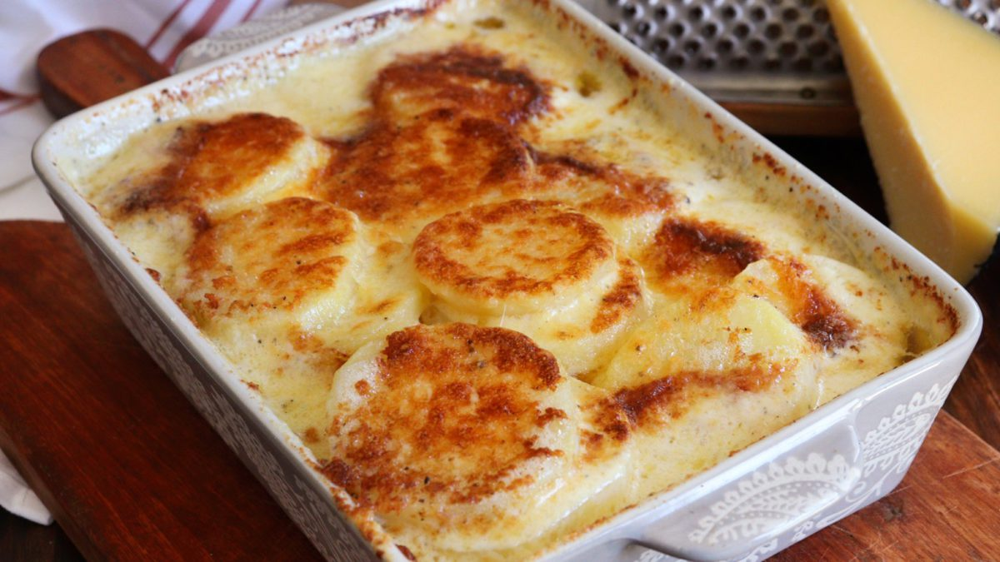

Baked potatoes w/ cream
This recipe is great for times when there are not many ingredients already available
at your kitchen or even if you dont want to be bothered to cook something complex to serve
as a side dish to balance your meal, so this is an easy, simple and cheap
way to add some carbs and fat to your meal.

Ingredients and Cookware
For this recipe you will need:
- 1 small baking dish
- 1 knife
- 4 or 5 potatoes
- 250ml of milk cream
- 250gr of shredded cheese
- Some ground nutmeg and pepper
- Some milk
Recipe
Now onto the cooking:
- First peel and slice the potatoes. Try to cut thin slices but not too thin,
this is for allowing the potatoes to cook quicker and more evenly.
- Layer the slices. Start arranging the potatoe slices in layers on your
baking dish. Fill the dish with each layer and season with ground nutmeg and pepper to your taste, you can add salt too, but remember that this will add up if you salt every layer.
- Fill with cream. Once your baking dish has enogh layers inside, add cream all over the potatoes, this should fill the space between the slices.
Probably it won't be completely full of cream, and although adding more cream is an option, try to limit this by compensating just adding some milk, since cream has high levels of fat.
Once you are ready you can add cheese and season it once again to make a tasty and crisp topping for your meal.
- Baking. You should have pre-heated your oven by now, doing this while prepairing your masterpice is a good advice. It doesen't have to be at a certain temperature, just keep it at low heat and make sure the cream and milk are boiling, this will happen when you see some thick bubbles appear.
Keep it mildly boiling, this whill cook the potatoes and blend the flavours, just be careful not to burn the liquids on your recipe, you can add more milk if your meal is dry before being completely baked (if potatoes are not soft inside, they need more time), this can happen due to evaporation.
- Finally serving. After 1 and a half to 2 hours, you can stick a knife inside your meal a see if the potatoes are evenly soft inside, this is your clue to know when they are ready.
Cut your serving from the baking dish and dont worry if it falls appart. Dont forget to serve some of the juice that sunk to the bottom. And now ENJOY!
Remember that this recipe is very tasty, but it is recomended to be complementary to another dish with higher protein content to assure a balanced meal, like
some chicken for example.